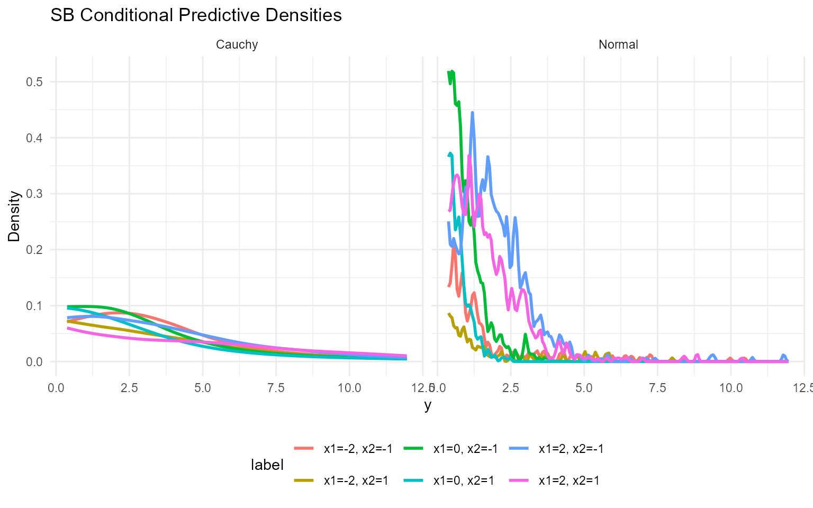
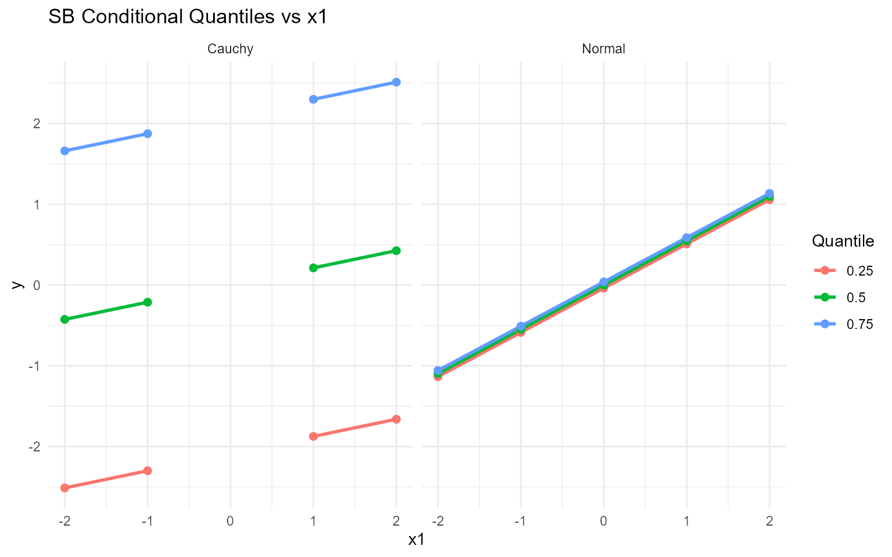

11. Conditional DPmix with Stick-Breaking Backend
Source:vignettes/website/workflows/v11-conditional-DPmix-SB.Rmd
v11-conditional-DPmix-SB.RmdLegacy vignette (for the website / historical notes). These files may not match the current exported API one-to-one. Last verified: 2026-01-18.
For the up-to-date workflow, see the main package vignettes (Introduction, Model Spec, MCMC Workflow, Unconditional/Conditional/Causal, Backends, S3 Reference).
Conditional DPmix: Stick-Breaking Backend
Purpose: Replace the CRP backend with stick-breaking
truncation while keeping the covariate-dependent bulk structure. This
demonstrates how fixed components interplay with
covariates.
Data Setup
data("nc_posX100_p3_k2")
y <- nc_posX100_p3_k2$y
X <- as.matrix(nc_posX100_p3_k2$X)
if (is.null(colnames(X))) {
colnames(X) <- paste0("x", seq_len(ncol(X)))
}
summary_tbl <- tibble(
statistic = c("N", "Mean", "SD", "Min", "Max"),
value = c(length(y), mean(y), sd(y), min(y), max(y))
)
ggplot(data.frame(y = y, x1 = X[, 1]), aes(x = x1, y = y)) +
geom_point(alpha = 0.6, color = "darkorange") +
geom_smooth(method = "loess", color = "navy", fill = NA) +
labs(title = "y vs X1 (SB)", x = "X1", y = "y") +
theme_minimal()
| statistic | value |
|---|---|
| N | 100.000 |
| Mean | 3.454 |
| SD | 2.406 |
| Min | 0.377 |
| Max | 10.870 |
Model Specification
bundle_sb_normal <- build_nimble_bundle(
y = y,
X = X,
kernel = "normal",
backend = "sb",
GPD = FALSE,
components = 5,
mcmc = mcmc
)
bundle_sb_cauchy <- build_nimble_bundle(
y = y,
X = X,
kernel = "cauchy",
backend = "sb",
GPD = FALSE,
components = 5,
mcmc = mcmc
)Running MCMC
fit_sb_normal <- load_or_fit("v11-conditional-DPmix-SB-fit_sb_normal", run_mcmc_bundle_manual(bundle_sb_normal))
fit_sb_cauchy <- load_or_fit("v11-conditional-DPmix-SB-fit_sb_cauchy", run_mcmc_bundle_manual(bundle_sb_cauchy))
summary(fit_sb_normal)MixGPD summary | backend: Stick-Breaking Process | kernel: Normal Distribution | GPD tail: FALSE | epsilon: 0.025
n = 100 | components = 5
Summary
Initial components: 5 | Components after truncation: 1
WAIC: 558.873
lppd: -250.492 | pWAIC: 28.945
Summary table
<table class="table" style="width: auto !important; margin-left: auto; margin-right: auto;">
<thead>
<tr>
<th style="text-align:center;"> parameter </th>
<th style="text-align:center;"> mean </th>
<th style="text-align:center;"> sd </th>
<th style="text-align:center;"> q0.025 </th>
<th style="text-align:center;"> q0.500 </th>
<th style="text-align:center;"> q0.975 </th>
<th style="text-align:center;"> ess </th>
</tr>
</thead>
<tbody>
<tr>
<td style="text-align:center;"> weights[1] </td>
<td style="text-align:center;"> 0.919 </td>
<td style="text-align:center;"> 0.1 </td>
<td style="text-align:center;"> 0.67 </td>
<td style="text-align:center;"> 0.95 </td>
<td style="text-align:center;"> 1 </td>
<td style="text-align:center;"> 50.969 </td>
</tr>
<tr>
<td style="text-align:center;"> alpha </td>
<td style="text-align:center;"> 0.648 </td>
<td style="text-align:center;"> 0.486 </td>
<td style="text-align:center;"> 0.141 </td>
<td style="text-align:center;"> 0.507 </td>
<td style="text-align:center;"> 1.885 </td>
<td style="text-align:center;"> 53.324 </td>
</tr>
<tr>
<td style="text-align:center;"> beta_mean[1, 1] </td>
<td style="text-align:center;"> 0.548 </td>
<td style="text-align:center;"> 0.827 </td>
<td style="text-align:center;"> -1.444 </td>
<td style="text-align:center;"> 0.564 </td>
<td style="text-align:center;"> 1.889 </td>
<td style="text-align:center;"> 252.31 </td>
</tr>
<tr>
<td style="text-align:center;"> beta_mean[2, 1] </td>
<td style="text-align:center;"> -0.072 </td>
<td style="text-align:center;"> 1.925 </td>
<td style="text-align:center;"> -3.37 </td>
<td style="text-align:center;"> -0.298 </td>
<td style="text-align:center;"> 3.991 </td>
<td style="text-align:center;"> 233.934 </td>
</tr>
<tr>
<td style="text-align:center;"> beta_mean[3, 1] </td>
<td style="text-align:center;"> 0.223 </td>
<td style="text-align:center;"> 1.942 </td>
<td style="text-align:center;"> -3.507 </td>
<td style="text-align:center;"> 0.194 </td>
<td style="text-align:center;"> 4.281 </td>
<td style="text-align:center;"> 161.589 </td>
</tr>
<tr>
<td style="text-align:center;"> beta_mean[4, 1] </td>
<td style="text-align:center;"> -0.012 </td>
<td style="text-align:center;"> 1.906 </td>
<td style="text-align:center;"> -3.382 </td>
<td style="text-align:center;"> -0.104 </td>
<td style="text-align:center;"> 3.867 </td>
<td style="text-align:center;"> 714.511 </td>
</tr>
<tr>
<td style="text-align:center;"> beta_mean[5, 1] </td>
<td style="text-align:center;"> -0.016 </td>
<td style="text-align:center;"> 1.924 </td>
<td style="text-align:center;"> -3.485 </td>
<td style="text-align:center;"> -0.066 </td>
<td style="text-align:center;"> 3.737 </td>
<td style="text-align:center;"> 707.691 </td>
</tr>
<tr>
<td style="text-align:center;"> beta_mean[1, 2] </td>
<td style="text-align:center;"> -0.315 </td>
<td style="text-align:center;"> 0.837 </td>
<td style="text-align:center;"> -2.183 </td>
<td style="text-align:center;"> -0.281 </td>
<td style="text-align:center;"> 1.206 </td>
<td style="text-align:center;"> 712.145 </td>
</tr>
<tr>
<td style="text-align:center;"> beta_mean[2, 2] </td>
<td style="text-align:center;"> -0.029 </td>
<td style="text-align:center;"> 1.913 </td>
<td style="text-align:center;"> -3.738 </td>
<td style="text-align:center;"> 0.004 </td>
<td style="text-align:center;"> 3.664 </td>
<td style="text-align:center;"> 257.921 </td>
</tr>
<tr>
<td style="text-align:center;"> beta_mean[3, 2] </td>
<td style="text-align:center;"> 0.236 </td>
<td style="text-align:center;"> 1.966 </td>
<td style="text-align:center;"> -3.601 </td>
<td style="text-align:center;"> 0.231 </td>
<td style="text-align:center;"> 3.94 </td>
<td style="text-align:center;"> 278.44 </td>
</tr>
<tr>
<td style="text-align:center;"> beta_mean[4, 2] </td>
<td style="text-align:center;"> 0.075 </td>
<td style="text-align:center;"> 2.042 </td>
<td style="text-align:center;"> -3.899 </td>
<td style="text-align:center;"> 0.127 </td>
<td style="text-align:center;"> 3.944 </td>
<td style="text-align:center;"> 605.683 </td>
</tr>
<tr>
<td style="text-align:center;"> beta_mean[5, 2] </td>
<td style="text-align:center;"> -0.068 </td>
<td style="text-align:center;"> 2.052 </td>
<td style="text-align:center;"> -4.1 </td>
<td style="text-align:center;"> 0.041 </td>
<td style="text-align:center;"> 3.978 </td>
<td style="text-align:center;"> 344.696 </td>
</tr>
<tr>
<td style="text-align:center;"> beta_mean[1, 3] </td>
<td style="text-align:center;"> 0.209 </td>
<td style="text-align:center;"> 0.613 </td>
<td style="text-align:center;"> -0.955 </td>
<td style="text-align:center;"> 0.207 </td>
<td style="text-align:center;"> 1.584 </td>
<td style="text-align:center;"> 295.492 </td>
</tr>
<tr>
<td style="text-align:center;"> beta_mean[2, 3] </td>
<td style="text-align:center;"> 0.049 </td>
<td style="text-align:center;"> 2.025 </td>
<td style="text-align:center;"> -4.078 </td>
<td style="text-align:center;"> 0.126 </td>
<td style="text-align:center;"> 3.936 </td>
<td style="text-align:center;"> 199.07 </td>
</tr>
<tr>
<td style="text-align:center;"> beta_mean[3, 3] </td>
<td style="text-align:center;"> -0.148 </td>
<td style="text-align:center;"> 1.984 </td>
<td style="text-align:center;"> -4.041 </td>
<td style="text-align:center;"> -0.029 </td>
<td style="text-align:center;"> 3.696 </td>
<td style="text-align:center;"> 324.884 </td>
</tr>
<tr>
<td style="text-align:center;"> beta_mean[4, 3] </td>
<td style="text-align:center;"> -0.008 </td>
<td style="text-align:center;"> 1.953 </td>
<td style="text-align:center;"> -4.011 </td>
<td style="text-align:center;"> 0.081 </td>
<td style="text-align:center;"> 3.691 </td>
<td style="text-align:center;"> 422.938 </td>
</tr>
<tr>
<td style="text-align:center;"> beta_mean[5, 3] </td>
<td style="text-align:center;"> 0.135 </td>
<td style="text-align:center;"> 1.967 </td>
<td style="text-align:center;"> -3.96 </td>
<td style="text-align:center;"> 0.18 </td>
<td style="text-align:center;"> 3.961 </td>
<td style="text-align:center;"> 831.723 </td>
</tr>
<tr>
<td style="text-align:center;"> sd[1] </td>
<td style="text-align:center;"> 0.057 </td>
<td style="text-align:center;"> 0.009 </td>
<td style="text-align:center;"> 0.04 </td>
<td style="text-align:center;"> 0.057 </td>
<td style="text-align:center;"> 0.076 </td>
<td style="text-align:center;"> 818.988 </td>
</tr>
</tbody>
</table>
summary(fit_sb_cauchy)MixGPD summary | backend: Stick-Breaking Process | kernel: Cauchy Distribution | GPD tail: FALSE | epsilon: 0.025
n = 100 | components = 5
Summary
Initial components: 5 | Components after truncation: 1
WAIC: 609.699
lppd: -249.723 | pWAIC: 55.127
Summary table
<table class="table" style="width: auto !important; margin-left: auto; margin-right: auto;">
<thead>
<tr>
<th style="text-align:center;"> parameter </th>
<th style="text-align:center;"> mean </th>
<th style="text-align:center;"> sd </th>
<th style="text-align:center;"> q0.025 </th>
<th style="text-align:center;"> q0.500 </th>
<th style="text-align:center;"> q0.975 </th>
<th style="text-align:center;"> ess </th>
</tr>
</thead>
<tbody>
<tr>
<td style="text-align:center;"> weights[1] </td>
<td style="text-align:center;"> 0.455 </td>
<td style="text-align:center;"> 0.136 </td>
<td style="text-align:center;"> 0.28 </td>
<td style="text-align:center;"> 0.43 </td>
<td style="text-align:center;"> 0.81 </td>
<td style="text-align:center;"> 69.493 </td>
</tr>
<tr>
<td style="text-align:center;"> alpha </td>
<td style="text-align:center;"> 1.789 </td>
<td style="text-align:center;"> 1.071 </td>
<td style="text-align:center;"> 0.403 </td>
<td style="text-align:center;"> 1.591 </td>
<td style="text-align:center;"> 4.488 </td>
<td style="text-align:center;"> 91.695 </td>
</tr>
<tr>
<td style="text-align:center;"> beta_location[1, 1] </td>
<td style="text-align:center;"> 0.213 </td>
<td style="text-align:center;"> 1.601 </td>
<td style="text-align:center;"> -2.24 </td>
<td style="text-align:center;"> -0.108 </td>
<td style="text-align:center;"> 4.393 </td>
<td style="text-align:center;"> 64.038 </td>
</tr>
<tr>
<td style="text-align:center;"> beta_location[2, 1] </td>
<td style="text-align:center;"> 0.385 </td>
<td style="text-align:center;"> 1.769 </td>
<td style="text-align:center;"> -2.625 </td>
<td style="text-align:center;"> 0.094 </td>
<td style="text-align:center;"> 4.29 </td>
<td style="text-align:center;"> 78.97 </td>
</tr>
<tr>
<td style="text-align:center;"> beta_location[3, 1] </td>
<td style="text-align:center;"> 0.675 </td>
<td style="text-align:center;"> 1.995 </td>
<td style="text-align:center;"> -2.556 </td>
<td style="text-align:center;"> 0.342 </td>
<td style="text-align:center;"> 4.635 </td>
<td style="text-align:center;"> 70.658 </td>
</tr>
<tr>
<td style="text-align:center;"> beta_location[4, 1] </td>
<td style="text-align:center;"> 0.506 </td>
<td style="text-align:center;"> 1.89 </td>
<td style="text-align:center;"> -2.979 </td>
<td style="text-align:center;"> 0.417 </td>
<td style="text-align:center;"> 4.475 </td>
<td style="text-align:center;"> 135.974 </td>
</tr>
<tr>
<td style="text-align:center;"> beta_location[5, 1] </td>
<td style="text-align:center;"> 0.654 </td>
<td style="text-align:center;"> 1.882 </td>
<td style="text-align:center;"> -2.599 </td>
<td style="text-align:center;"> 0.391 </td>
<td style="text-align:center;"> 4.594 </td>
<td style="text-align:center;"> 171.683 </td>
</tr>
<tr>
<td style="text-align:center;"> beta_location[1, 2] </td>
<td style="text-align:center;"> -0.38 </td>
<td style="text-align:center;"> 1.993 </td>
<td style="text-align:center;"> -3.684 </td>
<td style="text-align:center;"> -0.514 </td>
<td style="text-align:center;"> 3.381 </td>
<td style="text-align:center;"> 76.062 </td>
</tr>
<tr>
<td style="text-align:center;"> beta_location[2, 2] </td>
<td style="text-align:center;"> -0.05 </td>
<td style="text-align:center;"> 2.09 </td>
<td style="text-align:center;"> -3.616 </td>
<td style="text-align:center;"> -0.077 </td>
<td style="text-align:center;"> 3.933 </td>
<td style="text-align:center;"> 121.076 </td>
</tr>
<tr>
<td style="text-align:center;"> beta_location[3, 2] </td>
<td style="text-align:center;"> 0.135 </td>
<td style="text-align:center;"> 1.923 </td>
<td style="text-align:center;"> -3.313 </td>
<td style="text-align:center;"> 0.211 </td>
<td style="text-align:center;"> 3.996 </td>
<td style="text-align:center;"> 264.082 </td>
</tr>
<tr>
<td style="text-align:center;"> beta_location[4, 2] </td>
<td style="text-align:center;"> 0.22 </td>
<td style="text-align:center;"> 2.107 </td>
<td style="text-align:center;"> -4.004 </td>
<td style="text-align:center;"> 0.292 </td>
<td style="text-align:center;"> 4.087 </td>
<td style="text-align:center;"> 235.034 </td>
</tr>
<tr>
<td style="text-align:center;"> beta_location[5, 2] </td>
<td style="text-align:center;"> 0.243 </td>
<td style="text-align:center;"> 1.962 </td>
<td style="text-align:center;"> -3.395 </td>
<td style="text-align:center;"> 0.28 </td>
<td style="text-align:center;"> 4.094 </td>
<td style="text-align:center;"> 186.265 </td>
</tr>
<tr>
<td style="text-align:center;"> beta_location[1, 3] </td>
<td style="text-align:center;"> 0.081 </td>
<td style="text-align:center;"> 1.538 </td>
<td style="text-align:center;"> -3.072 </td>
<td style="text-align:center;"> -0.037 </td>
<td style="text-align:center;"> 2.955 </td>
<td style="text-align:center;"> 123.453 </td>
</tr>
<tr>
<td style="text-align:center;"> beta_location[2, 3] </td>
<td style="text-align:center;"> 0.134 </td>
<td style="text-align:center;"> 1.68 </td>
<td style="text-align:center;"> -3.98 </td>
<td style="text-align:center;"> 0.187 </td>
<td style="text-align:center;"> 2.902 </td>
<td style="text-align:center;"> 139.968 </td>
</tr>
<tr>
<td style="text-align:center;"> beta_location[3, 3] </td>
<td style="text-align:center;"> 0.425 </td>
<td style="text-align:center;"> 1.81 </td>
<td style="text-align:center;"> -3.481 </td>
<td style="text-align:center;"> 0.589 </td>
<td style="text-align:center;"> 3.303 </td>
<td style="text-align:center;"> 173.405 </td>
</tr>
<tr>
<td style="text-align:center;"> beta_location[4, 3] </td>
<td style="text-align:center;"> 0.07 </td>
<td style="text-align:center;"> 1.892 </td>
<td style="text-align:center;"> -3.713 </td>
<td style="text-align:center;"> 0.248 </td>
<td style="text-align:center;"> 3.337 </td>
<td style="text-align:center;"> 217.567 </td>
</tr>
<tr>
<td style="text-align:center;"> beta_location[5, 3] </td>
<td style="text-align:center;"> 0.057 </td>
<td style="text-align:center;"> 1.779 </td>
<td style="text-align:center;"> -3.791 </td>
<td style="text-align:center;"> 0.043 </td>
<td style="text-align:center;"> 3.115 </td>
<td style="text-align:center;"> 145.484 </td>
</tr>
<tr>
<td style="text-align:center;"> scale[1] </td>
<td style="text-align:center;"> 2.086 </td>
<td style="text-align:center;"> 0.595 </td>
<td style="text-align:center;"> 1.048 </td>
<td style="text-align:center;"> 2.078 </td>
<td style="text-align:center;"> 3.351 </td>
<td style="text-align:center;"> 445.854 </td>
</tr>
</tbody>
</table>
params_sb <- params(fit_sb_normal)
params_sbPosterior mean parameters
$alpha
[1] "0.648"
$w
[1] "0.919"
$beta_mean
<table class="table" style="width: auto !important; margin-left: auto; margin-right: auto;">
<thead>
<tr>
<th style="text-align:left;"> </th>
<th style="text-align:center;"> x1 </th>
<th style="text-align:center;"> x2 </th>
<th style="text-align:center;"> x3 </th>
</tr>
</thead>
<tbody>
<tr>
<td style="text-align:left;"> comp1 </td>
<td style="text-align:center;"> 0.548 </td>
<td style="text-align:center;"> -0.315 </td>
<td style="text-align:center;"> 0.209 </td>
</tr>
<tr>
<td style="text-align:left;"> comp2 </td>
<td style="text-align:center;"> -0.072 </td>
<td style="text-align:center;"> -0.029 </td>
<td style="text-align:center;"> 0.049 </td>
</tr>
<tr>
<td style="text-align:left;"> comp3 </td>
<td style="text-align:center;"> 0.223 </td>
<td style="text-align:center;"> 0.236 </td>
<td style="text-align:center;"> -0.148 </td>
</tr>
<tr>
<td style="text-align:left;"> comp4 </td>
<td style="text-align:center;"> -0.012 </td>
<td style="text-align:center;"> 0.075 </td>
<td style="text-align:center;"> -0.008 </td>
</tr>
<tr>
<td style="text-align:left;"> comp5 </td>
<td style="text-align:center;"> -0.016 </td>
<td style="text-align:center;"> -0.068 </td>
<td style="text-align:center;"> 0.135 </td>
</tr>
</tbody>
</table>
$sd
[1] "0.057"Conditional Predictive Density
X_new <- expand.grid(x1 = seq(-2, 2, length.out = 3), x2 = c(-1, 1), x3 = 0)
colnames(X_new) <- colnames(X)
y_min <- max(min(y), .Machine$double.eps)
y_grid <- seq(y_min, max(y) * 1.1, length.out = 200)
densities_normal <- lapply(seq_len(nrow(X_new)), function(i) {
pred <- predict(fit_sb_normal, x = as.matrix(X_new[i, , drop = FALSE]), y = y_grid, type = "density")
data.frame(
y = pred$fit$y,
density = pred$fit$density,
label = paste0("x1=", round(X_new[i, "x1"], 1), ", x2=", X_new[i, "x2"]),
model = "Normal"
)
})
densities_cauchy <- lapply(seq_len(nrow(X_new)), function(i) {
pred <- predict(fit_sb_cauchy, x = as.matrix(X_new[i, , drop = FALSE]), y = y_grid, type = "density")
data.frame(
y = pred$fit$y,
density = pred$fit$density,
label = paste0("x1=", round(X_new[i, "x1"], 1), ", x2=", X_new[i, "x2"]),
model = "Cauchy"
)
})
df_cond <- bind_rows(densities_normal, densities_cauchy)
ggplot(df_cond, aes(x = y, y = density, color = label)) +
geom_line(linewidth = 1) +
facet_wrap(~ model) +
labs(title = "SB Conditional Predictive Densities", x = "y", y = "Density") +
theme_minimal() +
theme(legend.position = "bottom")
Quantile Drift with Covariates
X_eval <- cbind(x1 = seq(-2, 2, length.out = 5), x2 = 0, x3 = 0)
colnames(X_eval) <- colnames(X)
quant_probs <- c(0.25, 0.5, 0.75)
pred_q_normal <- predict(fit_sb_normal, x = as.matrix(X_eval), type = "quantile", index = quant_probs)
pred_q_cauchy <- predict(fit_sb_cauchy, x = as.matrix(X_eval), type = "quantile", index = quant_probs)
quant_df_normal <- pred_q_normal$fit
quant_df_normal$x1 <- X_eval[quant_df_normal$id, "x1"]
quant_df_normal$model <- "Normal"
quant_df_cauchy <- pred_q_cauchy$fit
quant_df_cauchy$x1 <- X_eval[quant_df_cauchy$id, "x1"]
quant_df_cauchy$model <- "Cauchy"
bind_rows(quant_df_normal, quant_df_cauchy) %>%
ggplot(aes(x = x1, y = estimate, color = factor(index), group = index)) +
geom_line(linewidth = 1) +
geom_point(size = 2) +
facet_wrap(~ model) +
labs(title = "SB Conditional Quantiles vs x1", x = "x1", y = "y", color = "Quantile") +
theme_minimal()
Residuals & Diagnostics
if (interactive()) plot(fitted(fit_sb_cauchy))
if (interactive()) plot(fit_sb_normal, family = c("traceplot", "autocorrelation", "geweke"))
if (interactive()) plot(fit_sb_cauchy, family = c("density", "running", "caterpillar"))Takeaways
- Stick-breaking component count is fixed but still supports covariate-dependent mixtures.
-
predict(..., type = "density")returns group-specific densities for eachX. -
predict(..., type = "quantile")reports posterior-mean quantiles; the median is the 0.5 quantile and shifts withx1. - Diagnoses rely on the same S3
if (interactive()) plot()/fitted()pipeline available in other vignettes.